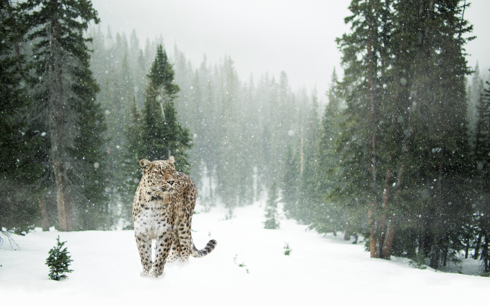
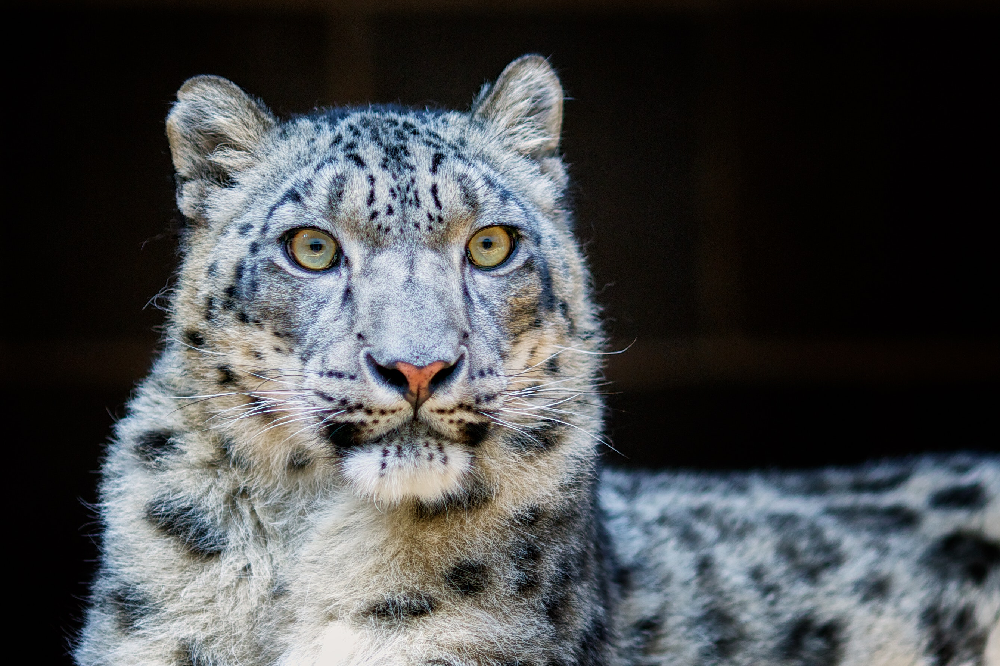

 Snow leopards prefer to ambush prey from above, using broken terrain to conceal their approach. They will actively pursue prey down steep mountainsides, using the momentum of their initial leap to chase animals for up to 300 m (980 ft). They kill with a bite to the neck, and may drag the prey to a safe location before feeding. They consume all edible parts of the carcass, and can survive on a single bharal for two weeks before hunting again. Annual prey needs appears to be 20–30 adult blue sheep. The snow leopard is capable of killing most animals in its range, with the probable exception of the adult male yak. It also eats a significant amount of vegetation, including grass and twigs. Snow leopards have been recorded to hunt in pairs successfully, especially mating pairs. The diet of the snow leopard varies across its range and with the time of year, and depends on prey availability. In the Himalayas, it preys mostly on Himalayan blue sheep and Siberian ibex. In the Karakoram, Tian Shan, Altai and Mongolia's Tost Mountains, its main prey consists of Siberian ibex, Thorold's deer, Siberian roe deer and argali. Other species hunted when available include red panda, wild boar, langur monkey, snow cock and Chukar partridge.

Where snow leopards prey on domestic livestock, they are subject to conflict with humans. However, even in Mongolia, where wild prey has been reduced, and interactions with humans are common, domestic livestock, mainly domestic sheep, comprises less than 20% of snow leopard diet. Herders kill snow leopards to prevent them from taking their livestock. The loss of prey animals due to overgrazing by domestic livestock, poaching, and defense of livestock are the major drivers for the decreasing population of the snow leopard. The snow leopard has not been reported to attack humans, and appears to be the least aggressive to humans of all big cats. As a result, they are easily driven away from livestock; they readily abandon their kills when threatened, and may not even defend themselves when attacked.